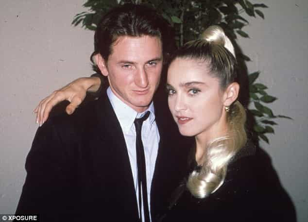
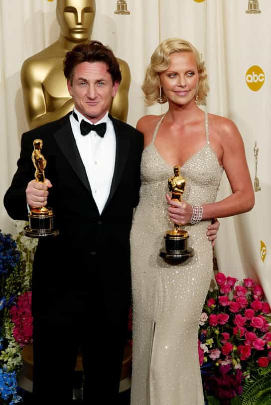

< < < Back
Why Is Outspoken Feminist Charlize Theron Dating Alleged Woman-Abuser Sean Penn? – Return Of Kings
In 2008, actress Charlize Theron was designated as a UN Goodwill Ambassador, deciding to focus on eradicating violence against women. Theron’s upbringing in South Africa included the death of her father after her mother was ruled to have killed him in self-defense.
Some people may be skeptical about the legitimacy of this version of events, but I honestly believe the account proffered by Charlize and her mother: her father was an abusive alcoholic, one amongst a distinct minority of men. What is troubling, however, is Theron’s current enthralment with Sean Penn, whose domestic and other violent incidents are legendary within and outside Hollywood.
Most ROK readers will be familiar with Sean Penn’s infamous baseball bat explosion at Madonna in the 1980s, which resulted, spectacularly, in a mere misdemeanor on his record. Like a true Hollywood liberal, Penn is exonerated for actions which make Mel Gibson’s alleged outbursts look like a kindergarten birthday party.
He also served jail time for a serious assault on a photographer. Madonna had refused to press charges against Penn for his violence at the time, almost certainly because he was already facing incarceration for pummelling that photographer.

“Hey Madonna, wanna watch the Dodgers game with me and my baseball bat?”
Police reports about Penn’s later pugilist antics are in the public domain, including his bizarre scaling of a Malibu mansion to inform Madonna that he owned her like a chattel. One police lieutenant, when he came across Madonna after that same incident, described her as bleeding and unrecognizable.
It is not at all bewildering that she claimed then that Penn had tried to bind her multiple times, and that he only relented when she performed sexual activity on his person.
It may seem incongruous that ROK would pillory a man for behavior against a woman, given the climate of false or poorly “proven” domestic violence cases. Sean Penn, though, wholeheartedly deserves an exemption.
And Charlize Theron, admittedly lacking a comparable violent character, continues to engage in overt hypocrisy for even allowing Penn to court her. Her feminist talking spiels, in retrospect, look more like polished public relations exercises to promote herself and her films than an aspect she takes seriously in her own life.
Can some women ever resist the bad (and violent) boy?
There are a range of incidents, especially against the media, where Sean Penn should have been charged, convicted and jailed, but wasn’t. Hollywood privilege at its finest. Enjoy, Charlize.
Penn has fame, money, his own idiosyncratic form of “suave” and, although far from a favorite performer of mine, a fair degree of sophistication and range as an actor. Many or all of you may hate the themes of his films, his politics, his personal behavior or just him in general, but he is not close to “woeful” as a professional thespian. The “qualities” I mentioned have evidently appealed to Theron, who is rather short on potential male suitors with a similar celebrity name and standing as hers.
Even as she unleashes hell on the “sexism” of the world in her role as a celebrity social commentator and UN Goodwill Ambassador, she completely overlooks the relevance of her dating woman-bashing Sean Penn. A small amount of backward rationalization is all it takes for some people to consciously or unconsciously justify personal choices that vehemently contradict their public stances.
Theron might have excused Penn’s actions against Madonna, not to mention his violence towards the paparazzi and others, as a product of the inherent stress of being in the public limelight. Or perhaps it was substance abuse. Or just “being young” and now having grown up (in his 50s!).
Compounding the Madonna and other incidents perpetrated by Penn himself, Theron, as I already established, was a witness to and victim of domestic violence as a girl.
It staggers me that someone with that personal experience wouldn’t relate her father’s actions to the pure luck Sean Penn had in not permanently incapacitating or killing Madonna with that baseball bat, his fists or in some other manner. Or actively contemplate his additional rap sheet, including the items he was not charged for but should have been.
Do as I act and talk, not as I live in real life

Theron has waxed lyrical about the feminist themes in her films, notably her most recent venture, Mad Max: Fury Road. But when you closely examine her personal life, which doesn’t actually require much examination at all, she has shacked up with an inveterately violent and self-absorbed man.
Far from beating Madonna with his fists, Sean Penn chose an object many times harder. There are probably a litany of other situations we are not aware of. Maybe insurance companies now offer paparazzi members specialized “Sean Penn Protection Cover” for $2,499 a month.
Since when, under the touted definition, did feminism resort to condoning women cohabiting with and loving abusers of other women? Theron can talk about feminism and “sisterhood” all she wants, but her romantic choice as of this moment undermines any words emitted from her mouth and any credibility she has as a domestic violence advocate.
Talk is cheap, ultimately, and Theron simply does not deserve her status as a UN Goodwill Ambassador when you consider how it enhances her image and subsequent commerciality.
It’s high time that part-time, superficial feminists like Charlize Theron, who indirectly earn millions from their so-called “advocacy on the side,” start walking the walk they demand of the society around them.
Read More: Rolling Stone Editor Sean Woods Allows His Far Left Beliefs To Get In The Way Of Facts